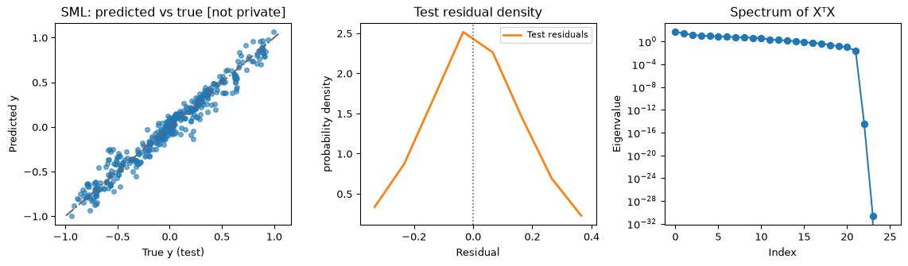
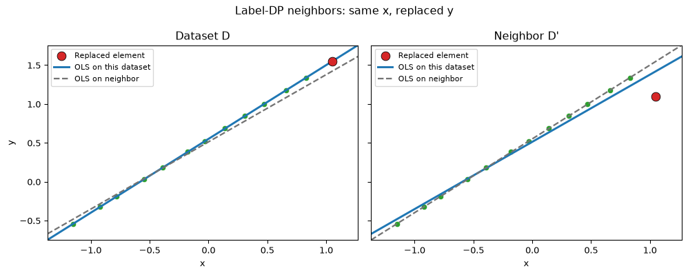
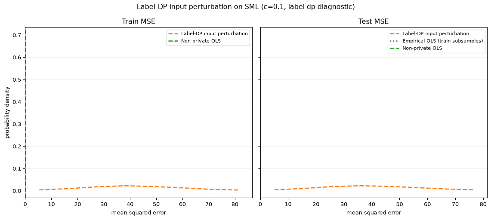
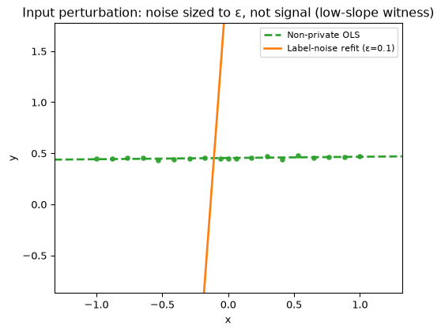
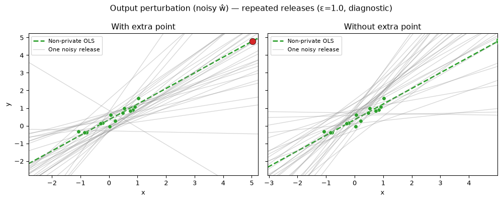
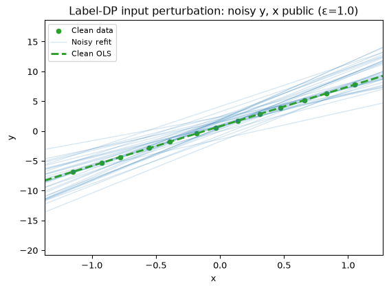
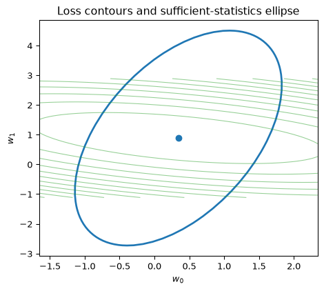
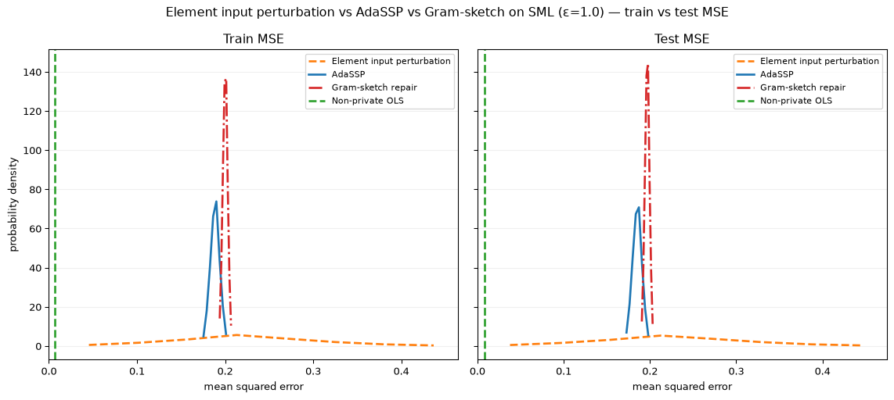
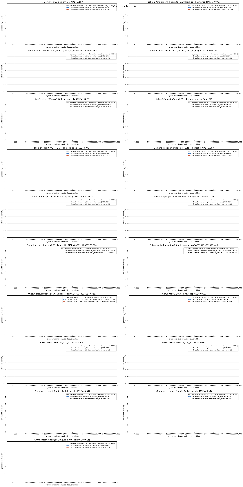

try:
get_ipython().run_line_magic('load_ext', 'autoreload')
get_ipython().run_line_magic('autoreload', '2')
except Exception:
pass
try:
import libdpy
except ImportError:
%pip install -q "libdpy[notebook] @ git+https://github.com/applied-dp-course/pub_lib.git@main"
import libdpyPrivate linear regression
When the released object is a model, but the mechanism is still noisy sufficient statistics.
Public contract (row-DP): \(\|x_i\|_2\le 1\), \(|y_i|\le 1\), fixed-size replacement, \(\delta=1/n^2\).
from libdpy.assignment_specific.private_linear_regression import (
build_ols_geometry_witnesses,
format_dataset_card,
)
from libdpy.assignment_specific.private_linear_regression.embed_interactives import (
OLSInfluenceGeometryPlot,
)
from libdpy.assignment_specific.private_linear_regression.lecture_figures import (
build_regression_dataset_artifact,
make_input_perturbation_low_slope_figure,
make_mechanism_error_distribution_figure,
make_ols_influence_geometry_figure,
make_output_perturbation_conditioning_figure,
make_private_method_comparison_figure,
make_regression_baseline_figure,
make_regression_privacy_utility_leaderboard,
make_sufficient_statistics_geometry_figure,
)
from libdpy.notebook_smoke import smoke_count
artifact = build_regression_dataset_artifact(key="sml")
geometry = build_ols_geometry_witnesses()
dataset = artifact["dataset"]
card = format_dataset_card(dataset)
card{'key': 'sml',
'title': 'SML',
'n': 3723,
'd': 26,
'features': '26 standardized numeric covariates from the vendored continuous design matrix. The shipped matrix does not include semantic feature names.',
'target': 'Continuous regression response (last column of the vendored train matrix; scaled to |y|≤1 after train-only normalization)',
'row_norm_max': 0.9999999999999999,
'target_abs_max': 1.0,
'gate_note': 'Gate-selected 2026-07-05: Bike Sharing was interpretable but failed high-privacy utility; SML passes the sufficient-statistics repairs vs trivial at ε∈{0.1,0.3,1.0}.',
'role': 'Mechanism-comparison benchmark — conditioning and sufficient statistics, not forecasting.',
'feature_names': [],
'feature_groups': {'standardized numeric covariates': '26 positional feature columns; semantic column names are not shipped'},
'preprocessing': 'row ℓ₂ normalization → ‖x_i‖₂≤1; target scaling → |y_i|≤1'}Real benchmark baseline (sml)
Gate-selected regression benchmark. Non-private OLS/ridge baseline — not private.
make_regression_baseline_figure(artifact)

Interactive geometry
Drag one point; compare OLS with vs without it (leave-one-out reference). Fixed axes; two lines only in the notebook geometry profile.
OLSInfluenceGeometryPlot(seed=50).embed()Label-DP input perturbation (diagnostic)
Noisy labels induce indirect noise on \(X^\top y\). Per-label sensitivity is 2 — wasteful when the learner only needs the statistic at sensitivity \(2/n\).
make_mechanism_error_distribution_figure(
artifact,
method="label_dp_input",
epsilon=0.1,
repetitions=smoke_count(30, smoke=8),
)

make_input_perturbation_low_slope_figure(geometry, epsilon=0.1)

Output perturbation (diagnostic)
Global sensitivity of \(\hat w\) scales with conditioning of \(X^\top X\) — diagnostic, not a row-DP claim without a formal bound.
make_output_perturbation_conditioning_figure(geometry, witness="nearly_singular")

Noisy sufficient statistics — AdaSSP and Gram-sketch repair
Valid row-DP repairs: perturb \((A,b)\) or sketch/mix the Gram side and noise the RHS.
Provenance caveat: the Gram-sketch repair used here is a local teaching implementation of a one-step Hessian-mixing idea. Fixed-seed tests guard the current wiring, but this lecture does not claim a fully audited upstream port.
make_sufficient_statistics_geometry_figure(geometry, witness="nearly_singular")

make_private_method_comparison_figure(
artifact,
epsilon=1.0,
repetitions=smoke_count(30, smoke=8),
)

Leaderboard on sml
Valid row-DP repairs (AdaSSP, Gram-sketch repair) vs diagnostics — grouped by privacy status in separate panels; diagnostic curves are not DP claims.
make_regression_privacy_utility_leaderboard(
artifact,
repetitions=smoke_count(20, smoke=5),
)
